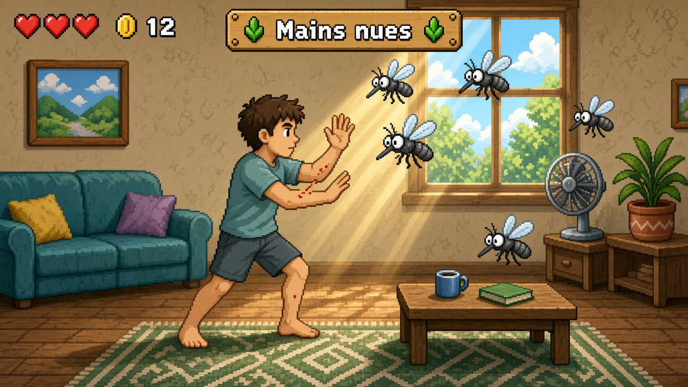
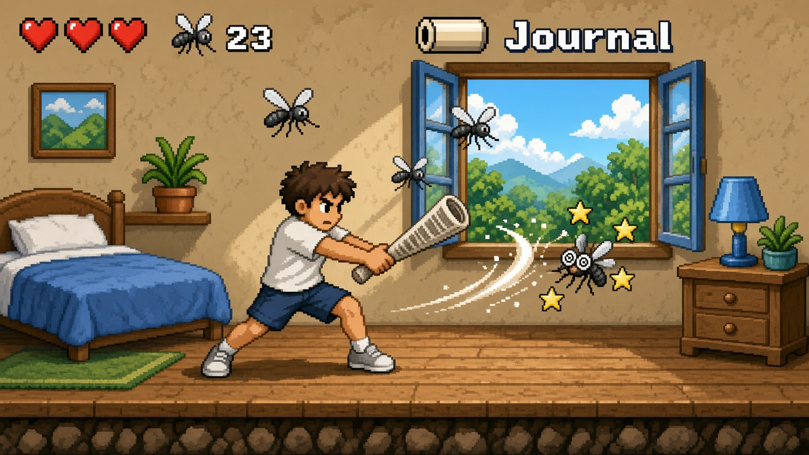
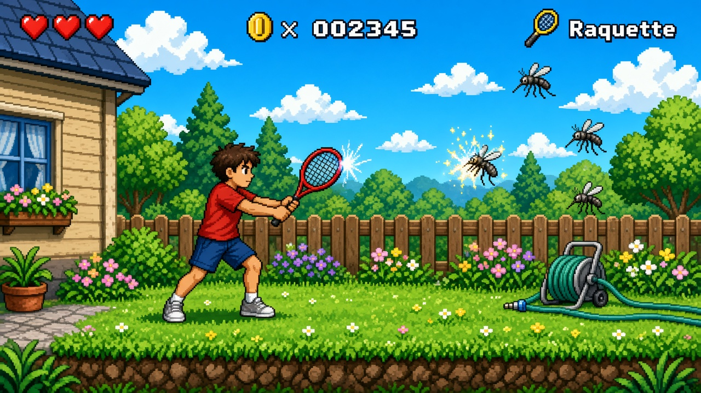

Moskito Killer
Unity 2D side-scroller, été, maison + jardin. Tu es chez toi, il fait chaud, les moustiques attaquent. Le score, c’est le nombre de moustiques tués. Une piqûre ne fait pas que perdre une vie : le moustique pond, et d’autres spawnent. Si tu te fais piquer, la pièce se remplit.
Maquettes



Scope v1
Intérieur (salon, chambre) + jardin. Pas de ville, pas de boutique. Un perso original (pas Mario). Look 16-bit lumineux, plateformes sur meubles / rebord de fenêtre / muret.
Armes par niveau
Kill milestones, pas un shop. Gameplay différent à chaque palier.
- Mains nues — claque courte, très rapide, une cible. Grosse fenêtre où un moustique peut se poser pendant la récupération.
- Journal roulé — arc large, recul, étourdit (étoiles). Peut toucher 2–3 moustiques. Récupération plus lente.
- Tapette — allonge plate, cadence rapide, one-shot les petits. Moins de recul que le journal. Demande de viser.
- Raquette électrique — zone grille devant soi, étincelle. Peut chaîner les moustiques proches. Une jauge de charge empêche de la garder allumée.
Règles
- Piqûre = −1 cœur + un sac d’œufs au sol. Les œufs éclosent après quelques secondes, sauf si tu les écrases (interaction à part de l’arme).
- Fenêtre ouverte = spawn plus rapide. Le ventilateur du salon pousse les moustiques (environnement).
- Combo tant que tu n’es pas piqué.
- Fin de session v1 : le jardin au crépuscule. Option d’un gros moustique « reine » comme cap, pas obligatoire pour la boucle score.
Hors v1
- Autres pièces de la maison, après le salon et la chambre.
- Spray, en plus des quatre paliers d’armes.
- Bougie.
- Moustiquaire défensive sur une fenêtre.
- Voisinage, au-delà du jardin.